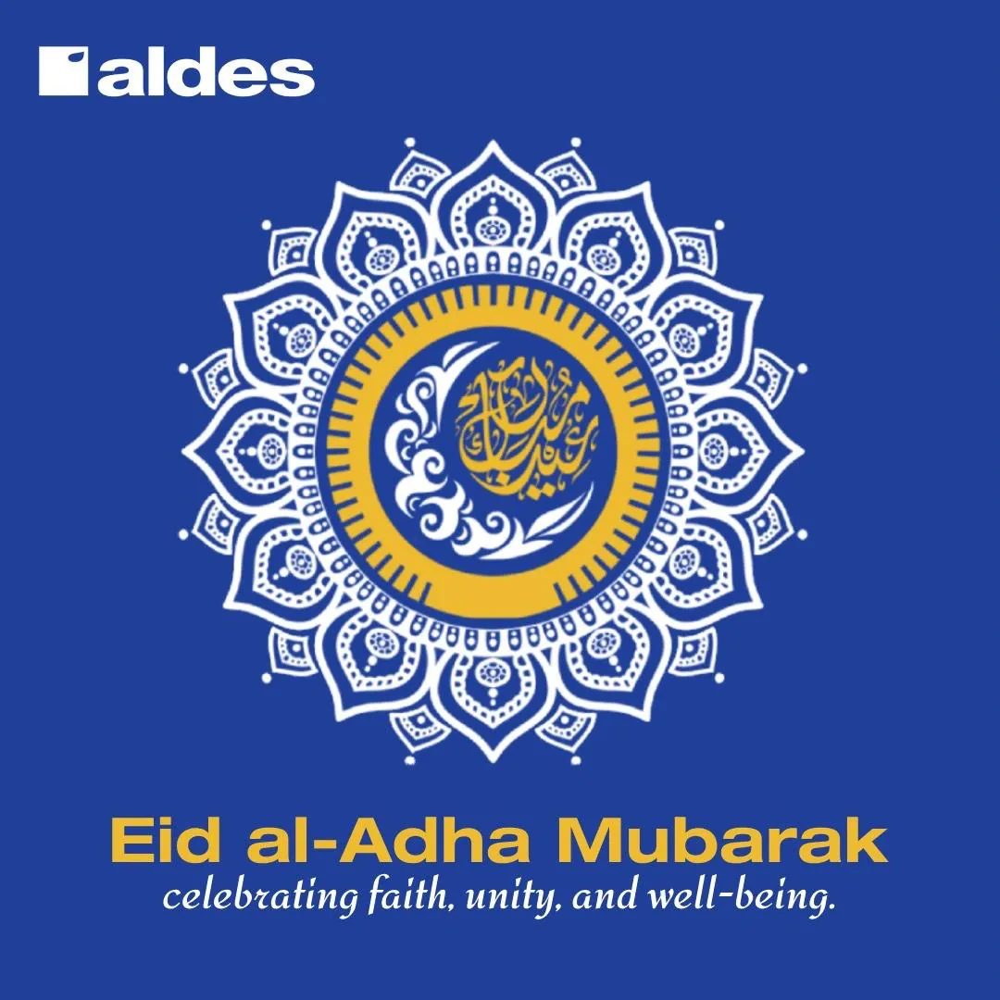
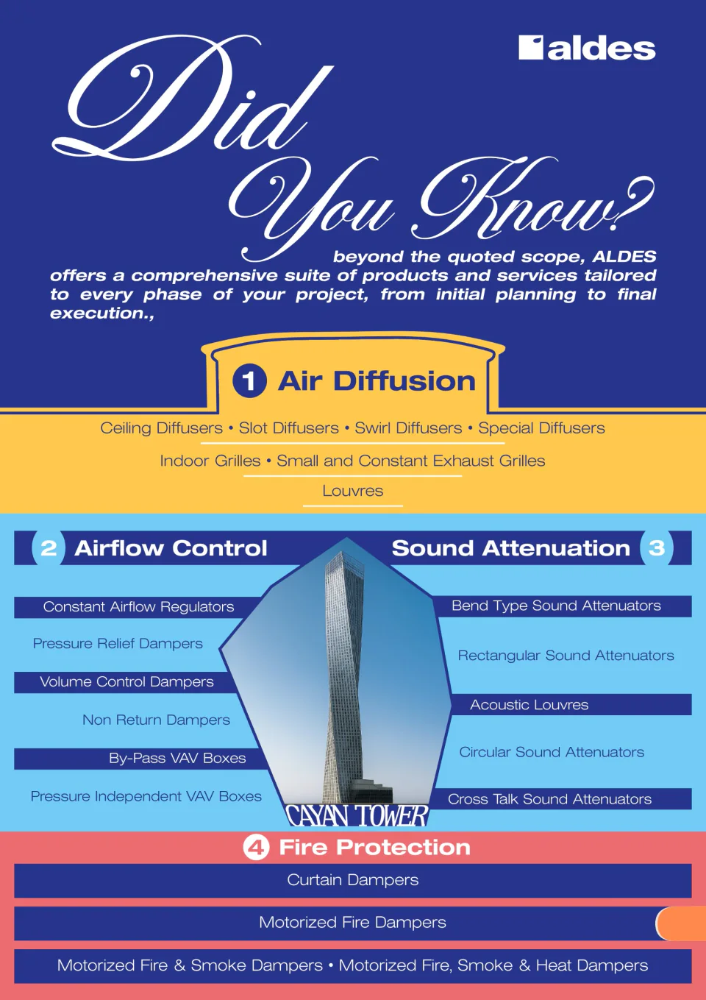
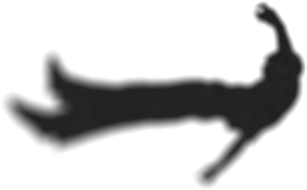

Visitor ledger · live
Sign the wall. Say what you saw.
A line kept with the work. Every signature is public, and appears here for everyone the moment it lands.
No signatures yet. The first one is yours.
The work is almost never finished.
This is what’s done.
Twenty years old. Grew up in Mumbai, moved to Sharjah, and have been here since. Studying Management1 at the University of Stirling.
Most of this portfolio is from three months at Aldes Middle East last year as a marketing intern. The title was that; the work is in the case studies, which explain it better than I can here. Before Aldes I worked at Al Suffah and placed second out of 25 teams at the UOWD Business Camp with a sustainable plant business.2 These things taught me things, though not always the things they were supposed to.
I work on both the design and the marketing side, and most of the useful work happens where they overlap.
I started a magazine at 17 called AKCIDENTAL VISION*. No brief, no assignment. I still make art, less than I used to, and watch a lot of slow films. Eventually I want to work in creative direction. For now I’m looking for work that matters.
Design Adobe Suite, Canva, Photoshop · CRM HubSpot, Salesforce · Productivity MS 365, Google Workspace · Languages English, Hindi, Gujarati, Arabic (basic)

The brief was a standard Eid post. I put Aldes’ product — HVAC thermostat control — inside a mandala, so the post was about the thermostat as much as the holiday. Built in Canva, revised in Photoshop against the brand guidelines. No paid promotion.
The team had been sending images to the printer for months. Every print came back pixelated. Nobody had figured out why.
The images were sourced from Google at screen resolution and sent to a commercial printer at wall scale. Identified in under a minute. Explained DPI to a room of people who hadn’t needed to think about it before. Sourced replacements, upscaled in Let’s Enhance, sized against the exact physical dimensions of both walls.
GM review. He wanted different projects. Went back through the full Aldes archive — over a thousand entries — and looked specifically for towers. The frames were tall and narrow. The buildings had to match the geometry of the space. Cayan Tower. Wasl Tower. Palm Tower.
Atlantis The Royal. The available photograph didn’t fit the frame proportions. Used Sora to generate a new image — same building, adjusted to fit.
Those images are on the wall.
Aldes Middle East — Conference Room, Sharjah HQ

Drag the divider, click anywhere, or use arrow keys
The brief was open — design a sales addendum for Aldes’ broader product range. I made a typographic document: flat vector product illustrations drawn in Photoshop, a landmark project image as the centrepiece, descriptions refined in DeepSeek. It was rejected. They wanted something simple, built in Word.
So I made that. The application team adopted it as the standard format for every quotation going out.
The design work gets noticed first. The operations work is why anything ships. Both were on the job from week one.
Started at 17. No brief, no assignment — I had things to say and no outlet that felt right, so I made one.
The asterisk is the point. In writing, you put an asterisk next to a correction — it signals something needs fixing. Anything made at 17 carries one: good for your age. So I put it there first. Named the magazine for the accident that every creative idea is — you set out to make one thing and end up somewhere better.
Issue 01 covered trauma, toys, why the Indian education system fails to produce people who know how to think, and a few other things from the perimeter of a 17-year-old’s world. Two writers. 5,000 views.
Read Issue 01 ↗
Issue 01 2023 Two writers 5,000 views
“Even if one person views this magazine front to back, I will consider my goal achieved.”
Editor’s Note — Issue 01
Issue 02 forthcoming